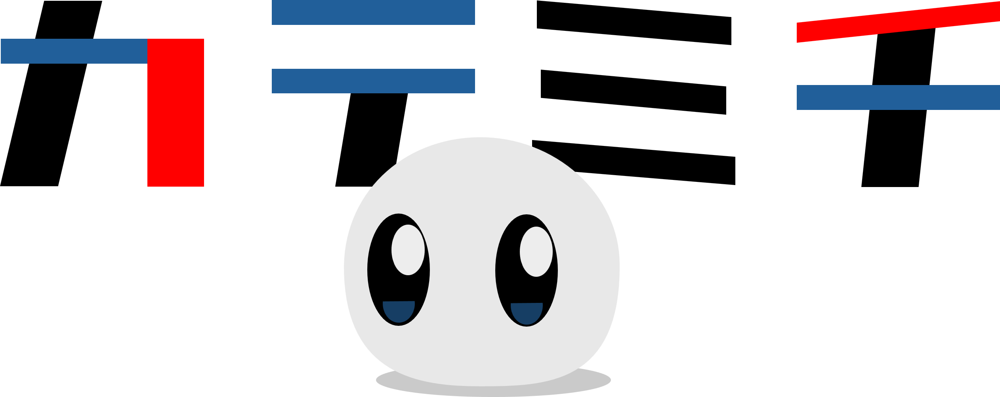

目次
本プライバシーポリシーは、gak wpy（以下、「開発者」）が提供するスマートフォン向けアプリケーション「KATEMICHI」（以下、「本アプリ」）における、ユーザーの情報の取り扱いについて定めるものです。
本アプリでは、ユーザーに快適な機能を提供するため、端末の以下の機能やデータにアクセスし、利用します。
本アプリが取得した位置情報、写真データ、およびアプリ内で作成されたデータは、すべてユーザーのスマートフォン端末内（ローカルデータベース）にのみ保存されます。開発者が管理する外部のサーバー等へこれらのデータを無断で送信、収集、および保存することは一切ありません。
ただし例外として、写真の撮影場所の「住所テキスト」を取得・表示する機能においてのみ、OSが提供するジオコーディングサービスに対して、座標データ（緯度・経度）のみを一時的に送信します。この際、写真の画像データ自体やユーザーを特定する情報が送信されることはありません。
本アプリは、上記の住所取得APIへの座標データの送信、および後述の広告配信目的を除き、取得した位置情報やメディアデータを第三者へ提供・開示することはありません。
本アプリでは、無料でのサービス提供を維持するため、Google AdMobを利用しています。広告配信事業者は、ユーザーの興味に応じた広告を表示するために、Cookieや広告識別子、その他匿名の利用状況データを自動的に取得する場合があります。これらの詳細や情報の取り扱いについては、各広告配信事業者のプライバシーポリシーをご確認ください。
開発者は、法令の変更やアプリの機能追加・変更に伴い、必要に応じて事前の予告なく本プライバシーポリシーを改定することがあります。改定後のプライバシーポリシーは、本ページへの掲示をもって効力を生じるものとします。
本アプリのプライバシーポリシーに関するお問い合わせや、アプリに関するご質問等は、以下の問い合わせフォームまでお願いいたします。